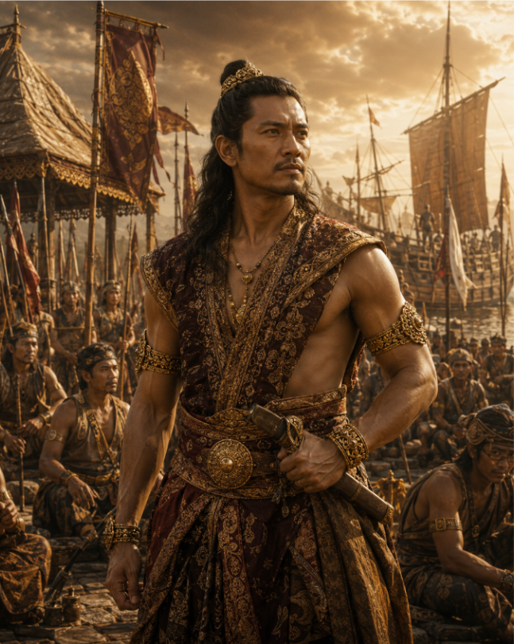

Hayam Wuruk adalah raja keempat Kerajaan Majapahit yang memerintah pada masa puncak kejayaan kerajaan. Bersama Mahapatih Gajah Mada, ia berhasil memperluas pengaruh Majapahit ke berbagai wilayah Nusantara serta mendorong perkembangan budaya, ekonomi, dan pemerintahan.
Lihat PerjalananLahir sebagai putra Tribhuwana Tunggadewi.
Dinobatkan menjadi Raja Majapahit.
Majapahit mencapai puncak kejayaan.
Wafat setelah memimpin selama 39 tahun.
Memperluas pengaruh Majapahit di Nusantara.
Menjaga persatuan dan keamanan kerajaan.
Mengembangkan jalur perdagangan maritim.
Mendorong perkembangan seni dan budaya.

Hayam Wuruk dan Gajah Mada merupakan dua tokoh utama di balik masa kejayaan Kerajaan Majapahit pada abad ke-14. Hayam Wuruk memimpin sebagai raja yang bijaksana, sementara Gajah Mada menjalankan perannya sebagai Mahapatih yang visioner. Melalui kerja sama keduanya, Majapahit berkembang menjadi salah satu kerajaan terbesar dan paling berpengaruh di Nusantara.
Mulai dikenal sebagai pemimpin Bhayangkara.
Diangkat sebagai Mahapatih Majapahit
Memimpin ekspedisi ke Bali.
Wafat setelah memperkuat Majapahit.
Hayam Wuruk dan Gajah Mada merupakan dua tokoh utama di balik masa kejayaan Kerajaan Majapahit pada abad ke-14. Hayam Wuruk memimpin sebagai raja yang bijaksana, sementara Gajah Mada menjalankan perannya sebagai Mahapatih yang visioner. Melalui kerja sama keduanya, Majapahit berkembang menjadi salah satu kerajaan terbesar dan paling berpengaruh di Nusantara.